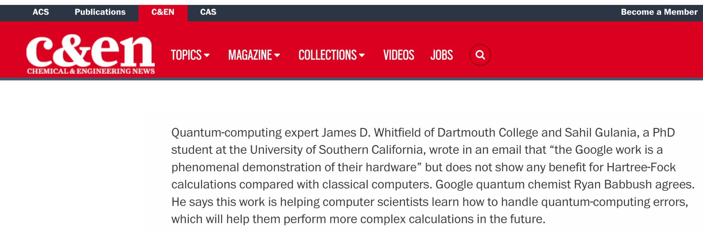
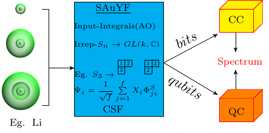
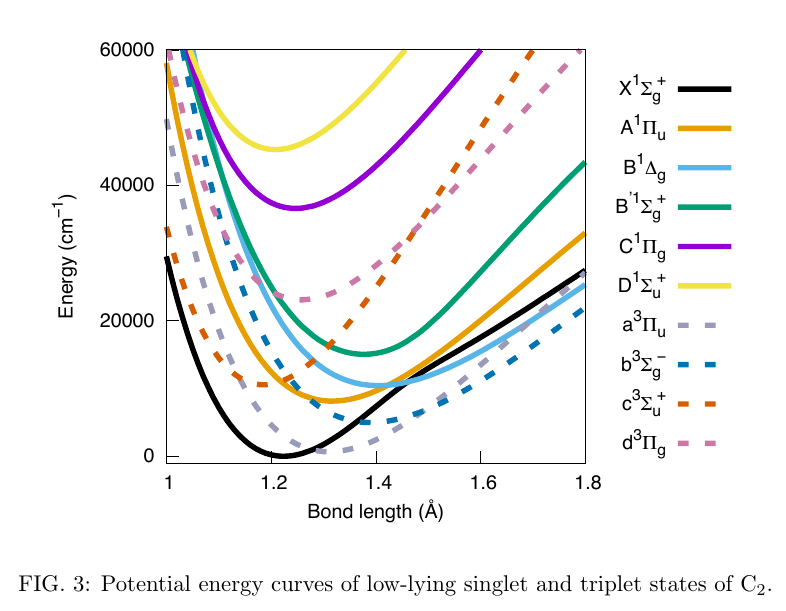
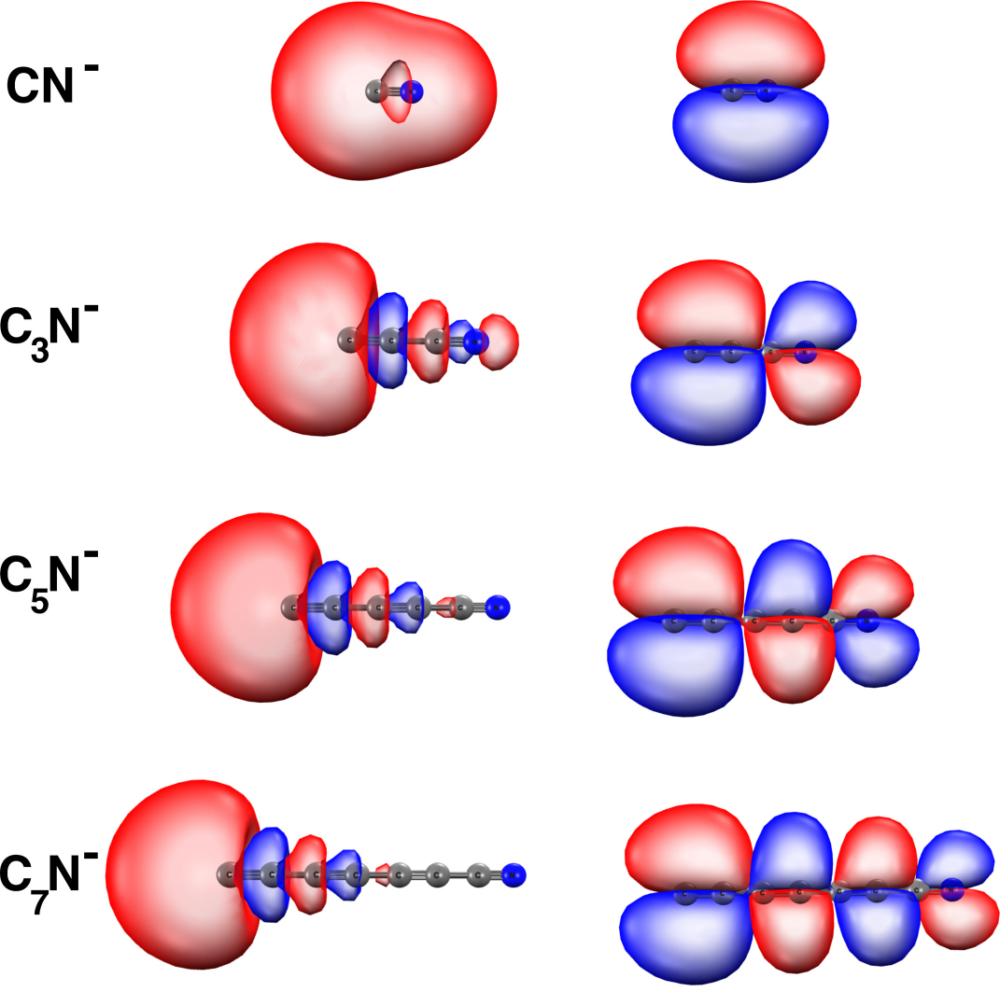

(8) S. Gulania, J. D. Whitfield, ''Limitations of Hartree-Fock with quantum resources'', arXiv:2007.09806 (2020)


(7) L. Bassman, S. Gulania, C. Powers, R. Li, T. Linker, K. Liu, T. K. S. Kumar, R. K. Kalia, A. Nakano, P. Vashishta, "Domain-Specific Compilers for Dynamic Simulations of Quantum Materials on Quantum Computers", arXiv:2004.07418 (2020)
(6) M. Ivanov, S. Gulania, A. I. Krylov, "Two Cycling Centers in One Molecule: Communication by Through-Bond Interactions and Entanglement of the Unpaired Electrons", J. Phys. Chem. Lett., 2020, 11, 4, 1297-1304
(5) S. Gulania, T-C. Jagau, A. Sanov, A. I. Krylov, "The Quest to Uncover the Nature of Benzonitrile Anion", Phys. Chem. Chem. Phys., 2020, 22, 5002-5010

(4) S. Gulania, J. D. Whitfield, "Young frames for quantum chemistry", arXiv:1904.10469 (2019)

(3) S. Gulania, T-C. Jagau, A. I. Krylov, "EOM-CC guide to Fock-space travel: the C2 edition", Faraday Discuss., 2019, 217, 514-532

(2) W. Skomorowski, S. Gulania, A. I. Krylov, "Bound and continuum-embedded states of cyanopolyyne anions", Phys. Chem. Chem. Phys., 2018, 20, 4805-4817

(1) J. Lyle, O. Wedig, S. Gulania, A. I. Krylov, R. Mabbs, "Channel branching ratios in CH2CN- photodetachment: Rotational structure and vibrational energy redistribution in autodetachment", J. Chem. Phys., 147, 234309 (2017)